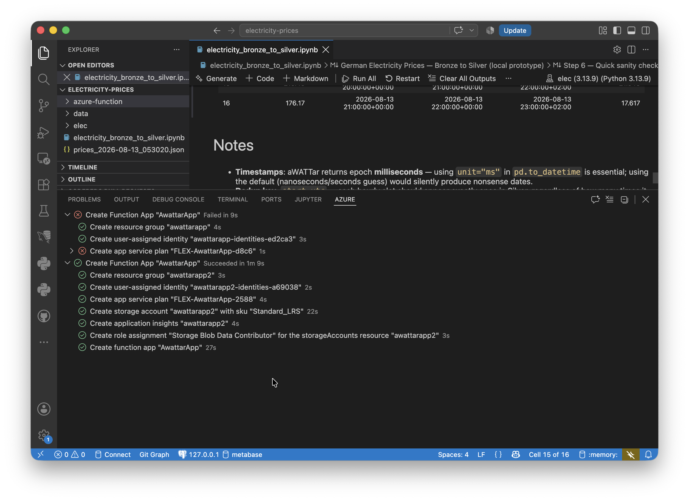
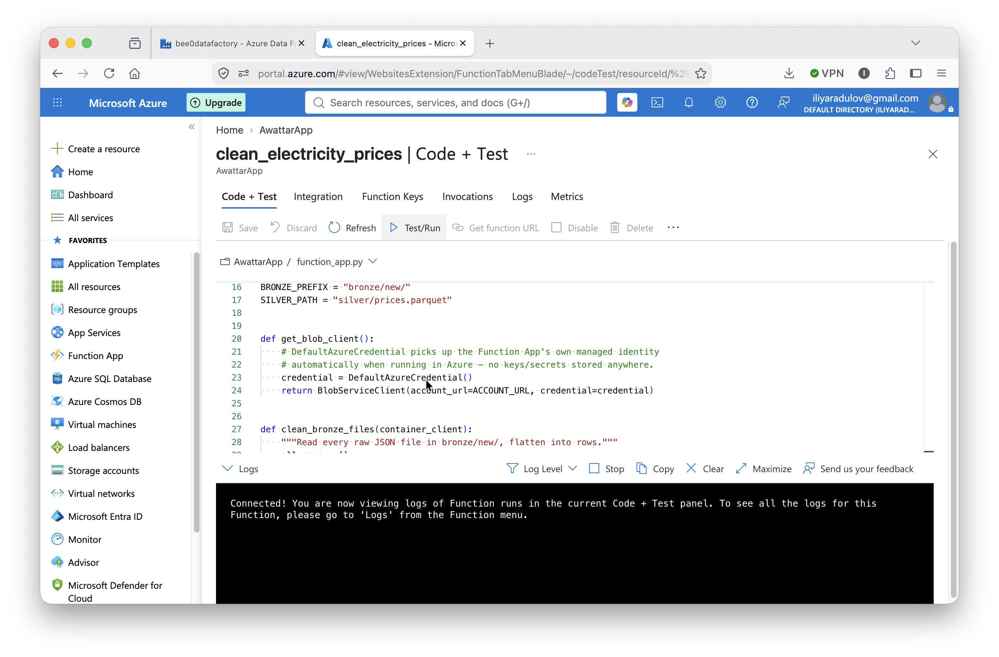

Electricity Prices — Azure
Chosen specifically to be small: fetch a free API once a day, clean it, store it. Ten roadblocks later, still done — just not quickly.
The actual scope
Strip away tooling entirely and this project is four steps: call one free, no-auth API once a day, save the raw response, flatten it into a timestamp/price table, and append it to a growing table while skipping anything already seen. A 30-line script with a cron job, in under an hour, on any machine. Everything below is the distance between that script and the equivalent running inside Azure.
Final architecture
Ingestion via an ADF REST linked service (anonymous auth, no key needed) into bronze/new/. Cleaning via an Azure Function App (Python, Consumption plan, timer trigger) — reads bronze files, flattens, converts timestamps, dedupes, merges into a single growing silver/prices.parquet, archives and deletes the source files. Synapse was deliberately ruled out for the cleaning step before it was ever attempted: a 17-row job would need the exact same Spark pool, cold-start delay, and quota contention risk as a 2.7-million-row one — the architecturally correct call was Azure Functions instead.
What was genuinely easy
Two things matched the "should be simple" expectation completely: choosing the aWATTar API (no key, no registration, one clean endpoint), and the ADF ingestion pipeline itself, built without real issues by reusing patterns already learned on Bee Haven.
Ten roadblocks, none of them about the actual problem
None of what follows came from the logic being hard or the API being unreliable — every one of these was Azure-platform-specific tooling friction, hit while building something whose actual logic is four bullet points long.

Screenshot of setting up the Function App through the VS Code.- Flex Consumption blocked on trial subscriptions — the portal's Function App wizard defaults Linux Python apps toward a hosting plan that's deliberately excluded from free trial accounts, and doesn't offer the classic plan that does work as a selectable option at all. Fixed by creating the Function App via VS Code's extension instead.
- Missing
host.json— a valid Functions project needs one at its root; not included when the code was first written. Microsoft.Webresource provider not registered — a one-time, per-subscription activation step, unrelated to this project specifically, needed before any Function App could be created.- First VS Code attempt still failed the same way, before the provider registration had finished propagating — the second attempt, minutes later, succeeded.
- RBAC confusion, again — the deployment auto-created a role assignment for the Function App's own internal housekeeping storage account, easy to mistake for the real data access grant. The actual storage account needed its own, separately-added role assignment — the same underlying lesson as Bee Haven's identity saga, in a new context.
- Portal's manual test button blocked by CORS — a one-time UI convenience setting unrelated to the function's real runtime security.
- Wrong managed identity type in code — VS Code's flow created a user-assigned identity by default, while
DefaultAzureCredential()with no arguments only looks for a system-assigned one. Fixed by passing the identity's client ID explicitly.
Once all of it was resolved, the function ran correctly on the first genuine attempt: authenticated, read four bronze files spanning multiple days, deduped and merged into a 32-row Silver table, archived the originals, completed in 943ms.

Screenshot of the deployed Function App in the Azure Portal.The trigger bug, again
The scheduled ingestion trigger, correctly configured and confirmed "Started," did not visibly fire over several days of observation — resulting in partial-day Silver data (17–20 rows instead of the expected ~24) rather than missing days outright. This is the exact same undocumented ADF trigger bug hit independently on Bee Haven. The dedup/merge logic itself was confirmed correct against the local Docker version, which uses its own scheduler and reliably captures a full 24 rows/day — isolating the gap specifically to ADF's trigger reliability, not the cleaning logic.
The dashboard: skipped, on purpose
A dashboard on top of the Azure Silver data was considered as a natural final step — a working local Plotly version already existed as proof of concept. Decided against building an Azure-connected version for a plain reason: Power BI Desktop is Windows-only, and this entire project was built on a Mac. With both Azure pipelines genuinely complete and working, the honest call was that neither the web-based Power BI Service nor pointing the local script at the Azure Parquet file added enough value to justify more time. Not a technical dead end — a conscious "the core project is done, this was optional polish" decision.
Where it stands
Ingestion, cleaning, and merge/dedup logic all individually proven correct. Automatic daily firing could not be confirmed, for the same documented platform reason as Bee Haven. Project closed out as done, with the trigger limitation and the skipped dashboard both explicitly documented rather than left unexplained.
📓 Full technical deep-dive: all ten roadblocks, symptom → root cause → fix